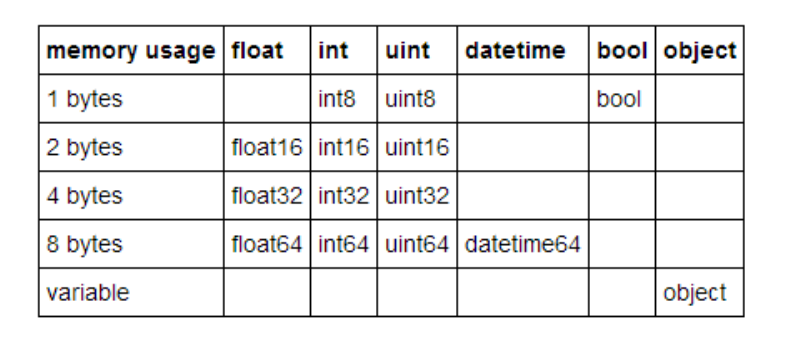

- 1. 使用更快的内核
- 2. 更高效的使用pandas
- 2.1. 高效数据IO
- 2.2. 高效遍历数据--避免常规循环
- 2.3. 高效数据拼接
- 2.4. 高效索引
- 2.5. 能改成numpy 就numpy
- 2.6. 多线程并行计算
- 3. 更小的pandas
- 4. 使用numpy 代替
- 5. 参考资料
1. 使用更快的内核
1.1. 使用Cython
在jupyter notebook 中使用 Cython magic function2 可以加速X3倍，对高度使用pandas的代码优化效果不明显。
原理
对python 代码转C进行提前编译，对for 循环等python解释器执行的代码进行优化，对高度使用pandas的代码优化效果不明显。
# Cell 1 %load_ext Cython # Cell 2 ## 注意需要添加相应的依赖项/包 %%cython import package def fun_name(foo,boo): ... return res # Cell 3 df.apply(lambda x:fun_name(x))
1.2. 使用 numba
numba.njit：更高的效率
当循环被认为可行时，通常会通过numba底层的NumPy数组对其进行优化，以尽可能多地移至C。
实际上，将numba性能提高到了微秒。没有一些繁琐的工作，将很难获得比这更高的效率。
from numba import njit @njit def divide(a, b): res = np.empty(a.shape) for i in range(len(a)): if b[i] != 0: res[i] = a[i] / b[i] else: res[i] = 0 return res %timeit divide(df['A'].values, df['B'].values) # 717 µs
使用@njit(parallel=True)可以为更大的阵列提供进一步的提升
1.3. 更快的numpy内核--mkl 加速

英特尔数学核心库(Intel MKL) 的开发是致力于加速在intel处理器上进行的数学运算。该库支持 Windows, Linux and macOS 操作系统。
安装
pip install intel-numpy conda install numpy # conda 版本已经是优化过的 Anoconda （base）环境里面已经安装过
查看
import numpy as np np.show_config() >>> # No MKL blas_mkl_info: NOT AVAILABLE blis_info: NOT AVAILABLE openblas_info: library_dirs = ['C:\\projects\\numpy-wheels\\numpy\\build\\openblas'] libraries = ['openblas'] language = f77 define_macros = [('HAVE_CBLAS', None)] blas_opt_info: library_dirs = ['C:\\projects\\numpy-wheels\\numpy\\build\\openblas'] libraries = ['openblas'] language = f77 define_macros = [('HAVE_CBLAS', None)] lapack_mkl_info: NOT AVAILABLE openblas_lapack_info: library_dirs = ['C:\\projects\\numpy-wheels\\numpy\\build\\openblas'] libraries = ['openblas'] language = f77 define_macros = [('HAVE_CBLAS', None)] lapack_opt_info: library_dirs = ['C:\\projects\\numpy-wheels\\numpy\\build\\openblas'] libraries = ['openblas'] language = f77 define_macros = [('HAVE_CBLAS', None)] # with mkl mkl_info: libraries = ['mkl_rt'] library_dirs = ['D:/ProgramData/Anaconda3\\Library\\lib'] define_macros = [('SCIPY_MKL_H', None), ('HAVE_CBLAS', None)] include_dirs = ['C:\\Program Files (x86)\\IntelSWTools\\compilers_and_libraries_2019.0.117\\windows\\mkl', 'C:\\Program Files (x86)\\IntelSWTools\\compilers_and_libraries_2019.0.117\\windows\\mkl\\include', 'C:\\Program Files (x86)\\IntelSWTools\\compilers_and_libraries_2019.0.117\\windows\\mkl\\lib', 'D:/ProgramData/Anaconda3\\Library\\include'] blas_mkl_info: libraries = ['mkl_rt'] library_dirs = ['D:/ProgramData/Anaconda3\\Library\\lib'] define_macros = [('SCIPY_MKL_H', None), ('HAVE_CBLAS', None)] include_dirs = ['C:\\Program Files (x86)\\IntelSWTools\\compilers_and_libraries_2019.0.117\\windows\\mkl', 'C:\\Program Files (x86)\\IntelSWTools\\compilers_and_libraries_2019.0.117\\windows\\mkl\\include', 'C:\\Program Files (x86)\\IntelSWTools\\compilers_and_libraries_2019.0.117\\windows\\mkl\\lib', 'D:/ProgramData/Anaconda3\\Library\\include'] blas_opt_info: libraries = ['mkl_rt'] library_dirs = ['D:/ProgramData/Anaconda3\\Library\\lib'] define_macros = [('SCIPY_MKL_H', None), ('HAVE_CBLAS', None)] include_dirs = ['C:\\Program Files (x86)\\IntelSWTools\\compilers_and_libraries_2019.0.117\\windows\\mkl', 'C:\\Program Files (x86)\\IntelSWTools\\compilers_and_libraries_2019.0.117\\windows\\mkl\\include', 'C:\\Program Files (x86)\\IntelSWTools\\compilers_and_libraries_2019.0.117\\windows\\mkl\\lib', 'D:/ProgramData/Anaconda3\\Library\\include'] libraries = ['mkl_rt'] library_dirs = ['D:/ProgramData/Anaconda3\\Library\\lib'] define_macros = [('SCIPY_MKL_H', None), ('HAVE_CBLAS', None)] include_dirs = ['C:\\Program Files (x86)\\IntelSWTools\\compilers_and_libraries_2019.0.117\\windows\\mkl', 'C:\\Program Files (x86)\\IntelSWTools\\compilers_and_libraries_2019.0.117\\windows\\mkl\\include', 'C:\\Program Files (x86)\\IntelSWTools\\compilers_and_libraries_2019.0.117\\windows\\mkl\\lib', 'D:/ProgramData/Anaconda3\\Library\\include'] lapack_opt_info: libraries = ['mkl_rt'] library_dirs = ['D:/ProgramData/Anaconda3\\Library\\lib'] define_macros = [('SCIPY_MKL_H', None), ('HAVE_CBLAS', None)] include_dirs = ['C:\\Program Files (x86)\\IntelSWTools\\compilers_and_libraries_2019.0.117\\windows\\mkl', 'C:\\Program Files (x86)\\IntelSWTools\\compilers_and_libraries_2019.0.117\\windows\\mkl\\include', 'C:\\Program Files (x86)\\IntelSWTools\\compilers_and_libraries_2019.0.117\\windows\\mkl\\lib', 'D:/ProgramData/Anaconda3\\Library\\include']
2. 更高效的使用pandas
2.1. 高效数据IO
2.1.1. 使用pandas自带函数读取文件
pandas是带buffer，按块读取的。python直接读取是按字节的。一般情况下使用pandas会比直接使用python快
2.1.2. 使用二进制格式文件进行I/O
选择合适的文件格式，有利于IO性能提升5
在极度追求IO性能的情况下推荐使用二进制文件格式（如：hdf、feather或h5py格式）。
# Text csv df=pd.read_csv("./test.csv") # 41.1 s df.to_csv("./test.csv",index=True) # 4min 7s # 800MB -> ./test.csv # 1.6GB -> df
2.1.2.1. HDF5 Format
HDF5 是一种高效的文件格式,
I/O 读取需要依赖 PyTables >= 3.0.0.
# binary HDF5 Format df=pd.read_hdf("./test.h5",key="df") # 6.39 s df.to_hdf("./test.h5",key="df",model="w") # 48.3 s # 1.6GB -> ./test.h5 # 1.6GB -> df
2.1.2.2. feather
Feather 的开发依赖于 Apache Arrow 计划，是一种快速、互动的文件存储格式
注意：
- pd.read_feather 默认 nthreads=1，可以调整
# feather df=pd.read_feather("./test.feather",nthreads =1) # 21.9 s df=pd.read_feather("./test.feather",nthreads =4) # 17s df.to_feather("./test.feather") # 8 s # 1.6GB -> ./test.feather # 1.6GB -> df
2.1.2.3. parquet--推荐
apache parquet 为dataframe 格式的内存数据，IO处理提供了优秀的解决方案。
pd.read_parquet 支持多引擎，兼顾持久化后的内存，支持多种文件路径
注意：
1. columns_name 不支持重复的列名和非字符串列名。
2. df.index.name=None or "" index 指引如果有，必须是字符串
关于引擎的说明：
1. fastparquet uses numba,
2. pyarrow uses a c-library,不支持 datetime数据

df=pd.read_parquet('./test.parquet', engine='pyarrow') # 13.9 s df.to_parquet('./test.parquet', engine='pyarrow') # 12 s # 7.13 MB -> ./test.parquet # 1.6GB -> df # 推荐使用 pyarrow 引擎 df=pd.read_parquet('./test.parquet', engine='fastparquet') df.to_parquet('./test.parquet', engine='fastparquet',compression="UNCOMPRESSED") # 8.26 s # 1.6GB-> ./test.parquet df.to_parquet('./test.parquet', engine='fastparquet',compression="GZIP") # 7.13 MB -> ./test.parquet # 14.7s # 1.6GB -> df
2.1.2.4. Python Pickle Format
直接使用
# binary Python Pickle Format df=pd.read_pickle("./test.pkl") # 3.46 s df.to_pickle("./test.pkl") # 35.7 s # 1.6GB -> ./test.pkl # 1.6GB -> df
一般情况下HDF的读取比读取csv文件快几十倍，但HDF文件在大小上会稍微大一些。
比较
print("pandas df to disk ####################################################") print('example_feather:') %timeit feather.write_feather(df, 'example_feather') # 2.62 ms ± 35.8 µs per loop (mean ± std. dev. of 7 runs, 100 loops each) print('example_parquet:') %timeit pq.write_table(pa.Table.from_pandas(df), 'example.parquet') # 3.19 ms ± 51 µs per loop (mean ± std. dev. of 7 runs, 100 loops each) print() print("for comparison:") print('example_pickle:') %timeit df.to_pickle('example_pickle') # 2.75 ms ± 18.8 µs per loop (mean ± std. dev. of 7 runs, 100 loops each) print('example_fp_parquet:') %timeit fp.write('example_fp_parquet', df) # 7.06 ms ± 205 µs per loop (mean ± std. dev. of 7 runs, 1 loop each) print('example_hdf:') %timeit df.to_hdf('example_hdf', 'key_to_store', mode='w', table=True) # 24.6 ms ± 4.45 ms per loop (mean ± std. dev. of 7 runs, 100 loops each) print() print("pandas df from disk ##################################################") print('example_feather:') %timeit feather.read_feather('example_feather') # 969 µs ± 1.8 µs per loop (mean ± std. dev. of 7 runs, 1000 loops each) print('example_parquet:') %timeit pq.read_table('example.parquet').to_pandas() # 1.9 ms ± 5.5 µs per loop (mean ± std. dev. of 7 runs, 1000 loops each) print("for comparison:") print('example_pickle:') %timeit pd.read_pickle('example_pickle') # 1.07 ms ± 6.21 µs per loop (mean ± std. dev. of 7 runs, 1000 loops each) print('example_fp_parquet:') %timeit fp.ParquetFile('example_fp_parquet').to_pandas() # 4.53 ms ± 260 µs per loop (mean ± std. dev. of 7 runs, 1 loop each) print('example_hdf:') %timeit pd.read_hdf('example_hdf') # 10 ms ± 43.4 µs per loop (mean ± std. dev. of 7 runs, 100 loops each) # pandas version: 0.22.0 # fastparquet version: 0.1.3 # numpy version: 1.13.3 # pandas version: 0.22.0 # pyarrow version: 0.8.0 # sys.version: 3.6.3 # example Dataframe taken from https://arrow.apache.org/docs/python/parquet.html
2.1.3. 数据压缩后再进行持久化
df.to_csv('output.csv.gz' , sep='|' , header=True , index=False , chunksize=100000 , compression='gzip' , encoding='utf-8') # 使用compression='gzip' 压缩文件 df.to_csv("./test.csv",index=True) # 4min 7s # 800MB -> ./test.csv # 1.6GB -> df df.to_csv("./test.csv.gz",index=True, compression='gzip',encoding='utf-8') # 5min # 9.80MB -> ./test.csv.gz # 1.6GB -> df df.to_pickle("data.pkl.compress", compression="gzip") rt = pd.read_pickle("data.pkl.compress", compression="gzip")
2.2. 高效遍历数据--避免常规循环
总结： 如果必须要使用循环，建议使用 apply； 否则的话尽量适应向量化的方法
2.2.1. 标准遍历--x1
for i in range(0,len(df)): 判定1： df["列名"]iloc[i]=value 判定2： df["列名"]iloc[i]=value
def soc_loop(df,TEAM,): df['Draws'] = 99999 for row in range(0, len(df)): if ((df['HomeTeam'].iloc[row] == TEAM) & (df['FTR'].iloc[row] == 'D')) | \ ((df['AwayTeam'].iloc[row] == TEAM) & (df['FTR'].iloc[row] == 'D')): df['Draws'].iloc[row] = 'Draw' elif ((df['HomeTeam'].iloc[row] == TEAM) & (df['FTR'].iloc[row] != 'D')) | \ ((df['AwayTeam'].iloc[row] == TEAM) & (df['FTR'].iloc[row] != 'D')): df['Draws'].iloc[row] = 'No_Draw' else: df['Draws'].iloc[row] = 'No_Game' return df df=soc_loop(df,"Arsenal")
2.2.2. 使用内置函数 iterrows()--x321倍加速
- 使用的是python level 的loop
- 实现形式是通过为新的df列添加 list来实现的，其中list通过
append遍历来实现
add_list=[] for index,row in df.iterrows(): add_list.append(func(parmaters_1,row["选择相关列名1"],row["选择相关列名2"])) df["列名"]=add_list
2.2.3. 使用内置函数 apply()--x811倍加速
apply()方法可将函数应用于dataframe特定行或列。 其本质是另一种形式的遍历loop。 但比python-level 的遍历效率更高。
函数可以由lambda方式在代码中内嵌实现，lambda函数的末尾包含axis参数，用来告知Pandas将函数运用于行（axis = 1）或者列（axis = 0），可以普通自定义函数设置。
def foo(row): print(type(row)) return sth df.apply(lambda row: foo(row["A"]), axis=1) #输入pd.Series 到函数中，效率低 df.apply(lambda row: foo(*row), axis=1, raw=True) # raw=True 输入numpy.array 到函数中，效率高 X10 # 对一行进行操作，作用于列 df.loc[选择行,:]=df.apply(lambda col: col["index_1"]+col["index_2"], axis =0) # 对一列进行操作，作用于行 df.loc[:,选择列]=df.apply(lambda row: row["选择相关列名1"]+row["选择相关列名2"], axis =1)
2.2.4. 使用groupby()--减少遍历元素
通过使用groupby()将数据元素合并分组，避免重复元素遍历，可以提高程序运行效率。

主要有：
1. grouped.apply(func)
2. grouped.agg(func)
3. grouped.transform(func)
4. grouped.uni_func() # 内置函数uni_func
上述4种应用本质上还是python-level的loop，只是针对dataframe这类的数据结构有不同程度的优化，包括底层C/C++的编译优化
2.2.4.1. groupby().apply(func)
自定义函数func
输入： apply 默认传入的是整个dataframe 到自定义函数func
原理： apply 函数将函数func 应用到您指定的每个group。
输出： apply 是一个更一般化的方法，自定义函数可以返回scalar, Series , DataFrame ,numpy array , list等形式
df = pd.DataFrame({'Q':['LI','ZHANG','ZHANG','LI','WANG'], 'A' : [1,1,1,2,2], 'B' : [1,-1,0,1,2], 'C' : [3,4,5,6,7]}) >>> Q A B C 0 LI 1 1 3 1 ZHANG 1 -1 4 2 ZHANG 1 0 5 3 LI 2 1 6 4 WANG 2 2 7 # 最好先对df 进行切片 a=df.loc[:,["A","C"]].groupby('A').apply(lambda x:x["A"]+x["C"]) # a 是 pd.Series # x 是apply 输入到自定义函数func函数中的变量，是dataframe格式 a.index=a.index.get_level_values(1) df["d"]=a >>> Q A B C d 0 LI 1 1 3 4 1 ZHANG 1 -1 4 5 2 ZHANG 1 0 5 6 3 LI 2 1 6 8 4 WANG 2 2 7 9 ###其他事项 def subtract_two(x): return x['B'] - x['C'] df.groupby('A').apply(subtract_two) # 可以正常运行 df.groupby('A').transform(subtract_two) # 报错
2.2.4.2. groupby().agg(func)
输入：agg的调用需要要指定字段,输入指定列到函数func
输出：Dataframe ，groupby index
df.groupby("Q").agg(["mean","sum"]) A B C mean sum mean sum mean sum Q LI 1.5 3 1.0 2 4.5 9 WANG 2.0 2 2.0 2 7.0 7 ZHANG 1.0 2 -0.5 -1 4.5 9 df.groupby('A').agg(dict(B='sum', C=['mean', 'prod'])) >>> B C sum mean prod A 1 0 4.0 60 2 3 6.5 42
2.2.4.3. groupby().transform(func)
自定义函数func
输入：以Series 形式输入
返回：自定义函数func 必须返回行数相同（必须与group长度相同）的一维序列（sequence，one dimensional Series, array or list,or scale），或者标量（a single scalar object ）
# sequence -> same row def rand_group_len(x): return np.random.rand(len(x)) new_df=df.groupby('Q').transform(rand_group_len) new_df >>> A B C 0 0.255113 0.894918 0.518019 1 0.641294 0.849864 0.847467 2 0.815746 0.224903 0.732254 3 0.575618 0.007238 0.621828 4 0.254013 0.331561 0.431511 # scalar def group_sum(x): return x.sum() sequence=df.groupby('A').transform(group_sum) s = pd.Series(range(3)) >>> 0 0 1 1 2 2 s.transform([np.sqrt, np.exp]) >>> sqrt exp 0 0.000000 1.000000 1 1.000000 2.718282 2 1.414214 7.389056
2.2.4.4. groupby().内置函数
groupyby 可以直接用的优化过的高速运算方法有count()、sum()、prod()、mean()、median()、min()、max()、std()、var()、first()、last()。
grouop_df=df.groupby('A').mean() # grouop_df index 是A
在groupby().agg和groupby().transform时尽量使用内置函数计算，可加速计算。
grouop_df=df.groupby('A').transform("mean") # grouop_df index 是range(0,n) df.groupby('A').agg(['mean', 'std'])
2.2.5. 更快的groupby.apply()方法，使用numpy 自定义
参考4 : Fast groupby-apply operations in Python with and without Pandas
http://esantorella.com/2016/06/16/groupby/
first_category = np.random.choice(n_categories, n_obs) y = np.random.normal(0, 1, n_obs) df = pd.DataFrame({'first category': first_category, 'y': y}) class Groupby: def __init__(self, keys): """ 精华就再在这里 np.unique """ _, self.keys_as_int = np.unique(keys, return_inverse = True) self.n_keys = max(self.keys_as_int) + 1 self.set_indices() def set_indices(self): self.indices = [[] for i in range(self.n_keys)] for i, k in enumerate(self.keys_as_int): self.indices[k].append(i) self.indices = [np.array(elt) for elt in self.indices] def apply(self, function, vector, broadcast): if broadcast: result = np.zeros(len(vector)) for idx in self.indices: result[idx] = function(vector[idx]) else: result = np.zeros(self.n_keys) for k, idx in enumerate(self.indices): result[self.keys_as_int[k]] = function(vector[idx]) return result %%timeit grouped = df.groupby('first category').apply(np.mean) # 595 ms ± 162 ms a=Groupby(df["first category"].values).apply(np.mean,df["y"].values,False) # 36.7 ms ± 6.65 ms %%timeit df['mean'] = df.groupby('first category')['y'].transform(np.mean) #4.28 ms ± 1.03 ms # 还是transform好
# 充分利用这一性能对dataframe 进行分解 然后进行高效map运算 unique_keys, indices = np.unique(['a', 'b', 'a', 'a', 'b'], return_inverse = True) print(unique_keys) >>> array([{'b', 'a'}], dtype=object) print(indices) >>> #list [0, 1, 0, 0, 1] print(unique_keys[indices]) >>> array(['a', 'b', 'a', 'a', 'b'], dtype='<U1')
2.2.6. 使用向量化函数 np.vectorize代替apply 处理
np.vectorize is fake vectorize.3
np.vectorize的主要作用原理是使用python-level 的map函数封装pyfunc对输入数组求值，而不是numpy的boardcast 规则。在这里boardcast 规则并不重要。
np.vectorize 运行过程中通过使用np.frompyfunc方法将pyfunc 转换为 numpy 的通用函数ufunc，并通过一些优化（例如缓存）以实现性能提升。
np.vectorize 依然属于 Python-level 的loop，虽然它比pd.DataFrame.apply更加高效。但依据其原理，其作用效果于 map,zip 在同一级别上
%timeit list(map(divide, df['A'], df['B'])) # 43.9 ms %timeit np.vectorize(divide)(df['A'], df['B']) # 48.1 ms %timeit [divide(a, b) for a, b in zip(df['A'], df['B'])] # 49.4 ms %timeit df.apply(lambda row: divide(*row), axis=1, raw=True) # 760 ms
func=lambda x:x+2 vecfunc = np.vectorize(func) new_array = vecfunc(old_array) def foo(a,b): return a+b df['result2'] = np.vectorize(foo)(df['A'], df['B']) # func:A python function or method type(vecfunc) >>> numpy.vectorize # Vectorized function. 向量化的函数 type(new_array) >>> numpy.array
2.2.7. 使用pandas 向量化 —-x9280倍加速
pandas 向量化：
1. 避免使用python解释器 级别的loop循环
2. 使用优化的C编译器，使用内存更加高效
3. 依据有条件的切片df.loc[i,c] 及函数实现（注意实现方式）
%timeit (df['A'] / df['B']).replace([np.inf, -np.inf], 0) # 1.96 ms
# 构建函数 def func(parameter_1,col_1,col_2,..): """ col_1: df array 相同df col_2: df array 相同df """ df["列名"]=1 df.loc[行条件1,"列名"]=value_1 df.loc[行条件2(col_1==值1,col_2==值2),"列名"]=value_2 df["列名"]=func(parameter_1,df["选择列名1"],df["选择列名2"],..)
def soc_iter(TEAM,home,away,ftr): df['Draws'] = 'No_Game' df.loc[((home == TEAM) & (ftr == 'D')) | ((away == TEAM) & (ftr == 'D')), 'Draws'] = 'Draw' df.loc[((home == TEAM) & (ftr != 'D')) | ((away == TEAM) & (ftr != 'D')), 'Draws'] = 'No_Draw' df["Draws"]=soc_loop("Arsenal",df["HOME"],df["AWAY"],df["FTR"])
2.2.8. 使用numpy 向量化--x658880倍加速
pandas 向量化：
1. 避免使用python解释器 级别的loop循环
2. 使用优化的C编译器，使用内存更加高效
3. 条件切片df.loc[i,c] 及函数实现（注意实现方式）
4. 函数输入的是numpy array (不同点)
%timeit np.where(df['B'] == 0, 0, df['A'] / df['B']) # 1.17 ms # 构建函数 def func(parameter_1,col_1,col_2,..): df["列名"]=1 df.loc[行条件1,"列名"]=value_1 df.loc[行条件2(col_1==值1,col_2==值2),"列名"]=value_2 # 注意是 df["col"].value df["列名"]=func(parameter_1,df["选择列名1"].value,df["选择列名2"].value,..)
def soc_iter(TEAM,home,away,ftr): df['Draws'] = 'No_Game' df.loc[((home == TEAM) & (ftr == 'D')) | ((away == TEAM) & (ftr == 'D')), 'Draws'] = 'Draw' df.loc[((home == TEAM) & (ftr != 'D')) | ((away == TEAM) & (ftr != 'D')), 'Draws'] = 'No_Draw' df["Draws"]=soc_loop("Arsenal",df["HOME"].value,df["AWAY"].value,df["FTR"].value)
2.2.9. 总结
总结： 如果必须要使用循环，建议使用 apply,同时考虑减少遍历元素数量和提前切片减小数据大小； 否则的话尽量适应向量化的方法
2.3. 高效数据拼接
2.3.1. 避免 append
数据在行层面的df.append，减少数据合并过程中的遍历搜索，建议使用先使用：
1. list.append 的方式添加到Dataframe中
2. 创建已知大小的空Dataframe，通过高效索引更改
# 第一种方式（运行时间最长——1分钟，内存占用一般） start1 = datetime.now() res1 = pd.DataFrame() for df in df_list: res1 = res1.append(df) print('append耗时：%s秒' % (datetime.now() - start1)) # %% 第二种方式（运行时间相对第一种少一些——46秒，但内存接近溢出） start2 = datetime.now() dict_list = [df.to_dict() for df in df_list] combine_dict = {} i = 0 for dic in dict_list: length = len(list(dic.values())[0]) for idx in range(length): combine_dict[i] = {k: dic[k][idx] for k in dic.keys()} i += 1 res2 = pd.DataFrame.from_dict(combine_dict, 'index') print('dict合并方式耗时：%s秒' % (datetime.now() - start2)) # 第三种方式：list装好所有值（运行时间最短——4秒多，内存占用低） start3 = datetime.now() columns = ['a', 'b'] a_list = [] b_list = [] for df in df_list: a_list.extend(df['a']) b_list.extend(df['b']) res3 = pd.DataFrame({'a': a_list, 'b': b_list}) print('list装好所有值方式耗时：%s秒' % (datetime.now() - start3))
2.3.2. join 代替 merge--x8加速
使用set_index 将需要merger的key column 列设置为dataframe 的index，然后使用df.join 合并确实可以加速。
加速前提
速度的提高将取决于您的索引是否唯一。如果索引不是唯一的，则在索引上合并两个数据帧可能甚至需要更长的时间
原理
Indices have a hash table. Meaning you can look them up in amortized O(1). For a normal column you need O(n) in worst case, meaning merging two dfs with len n takes O(n^2) in worst case
import pandas as pd import numpy as np myids=np.random.choice(np.arange(10000000), size=1000000, replace=False) df1 = pd.DataFrame(myids, columns=['A']) df1['B'] = np.random.randint(0,1000,(1000000)) df2 = pd.DataFrame(np.random.permutation(myids), columns=['A2']) df2['B2'] = np.random.randint(0,1000,(1000000)) %%timeit x = df1.merge(df2, how='left', left_on='A', right_on='A2') #1 loop, best of 3: 664 ms per loop %%timeit x = df1.set_index('A').join(df2.set_index('A2'), how='left') #1 loop, best of 3: 354 ms per loop %%time df1.set_index('A', inplace=True) df2.set_index('A2', inplace=True) #Wall time: 16 ms %%timeit x = df1.join(df2, how='left') ## df.join(other.set_index('key'), on='key') key A B 0 K0 A0 B0 1 K1 A1 B1 2 K2 A2 B2 3 K3 A3 NaN 4 K4 A4 NaN 5 K5 A5 NaN
2.4. 高效索引
pandas DataFrame 条件筛选是通过布尔索引完成的，其效率非常高。
2.4.1. 使用层次化索引筛选数据，避免使用条件逻辑筛选
层次化索引(hierarchical indexing)是pandas的一个重要的功能，它可以在一个轴上有多个（两个以上）的索引，这就表示着，它能够以低维度形式来表示高维度的数据。
df = DataFrame(np.arange(12).reshape(4,3, index=[["a","a","b","b"],[1,2,1,2]], columns=[["A","A","B"],["Z","X","C"]]) print(df) >>> ''' A B Z X C a 1 0 1 2 2 3 4 5 b 1 6 7 8 2 9 10 11 ''' #选取列,参数只能选取"A"或"B" print(data["A"])#等价于data.ix[:,"A"] ''' Z X a 1 0 1 2 3 4 b 1 6 7 2 9 10 ''' #选取行 print(data.ix["a"]) ''' A B Z X C 1 0 1 2 2 3 4 5 """
- df->Series,先把table_s转为层次化索引的Series，
- Series--索引-->数据。然后按索引值直接检索数据，
这比采用形如df[(df.col1==a)&(df.col2==b)]这种条件逻辑筛选法程序更简洁，运行也更快一些。
2.4.2. 正确使用 loc\iloc\ix\at
df.loc[i,c] 能够选取多行多列
df.at[i,c] 一次只能访问一个值，同等条件下比loc快10倍速
%%timeit outdf.loc[0] = indf.loc[0] >>> 100 loops, best of 3: 11.7 ms per loop %%timeit outdf.iloc[0] = indf.iloc[0] >>> 100 loops, best of 3: 11.4 ms per loop %%timeit outdf.ix[0] = indf.ix[0] >>> 100 loops, best of 3: 11.6 ms per loop %%timeit outdf.at[0,'time'] = indf.at[0,'time'] >>> 10000 loops, best of 3: 25.3 µs per loop
2.4.3. copy vs view
尽量使用切片而不是列表
df.iloc[:,10:20] # 更好 df.iloc[:,[10,11,...,20]] #差
2.5. 能改成numpy 就numpy
给numpy数据一个名字
我喜欢用 pandas, 因为 pandas 能让你给数据命名, 用名字来做 index. 在数据类型很多的时候, 名字总是比 index 好记太多了, 也好用太多了. 但是 pandas 的确比 numpy 慢. 好在我们还是有途径可以实现用名字来索引. 这就是 structured array. 下面 a/b 的结构是一样的, 只是一个是 numpy 一个是 pandas.
a = np.zeros(3, dtype=[('foo', np.int32), ('bar', np.float16)]) b = pd.DataFrame(np.zeros((3, 2), dtype=np.int32), columns=['foo', 'bar']) b['bar'] = b['bar'].astype(np.float16) """ # a array([(0, 0.), (0, 0.), (0, 0.)], dtype=[('foo', '<i4'), ('bar', '<f2')]) # b foo bar 0 0 0.0 1 0 0.0 2 0 0.0 """ def f1(a): for _ in range(N): a['bar'] *= a['foo'] def f2(b): for _ in range(N): b['bar'] *= b['foo'] print('%f' % ((t1-t0)/N)) # 0.000003 print('%f' % ((t2-t1)/N)) # 0.000508
2.6. 多线程并行计算
由于Pandas的一些操作都是单核的，往往浪费其他核的计算时间。
使用多CPU核心分块并行运算，对于可分块运行的数据运算任务，可使用多线程类编程，调用多个CPU核心并行工作提高速度。
2.6.1. multiprocessing.Pool
因为 GIL 的缘故 threading 不能用，那么我们就好好研究研究 multiprocessing。（当然，如果你说你不用 CPython，没有 GIL 的问题，那也是极佳的。）
首先介绍一个简单粗暴，非常实用的工具，就是 multiprocessing.Pool。如果你的任务能用ys = map(f, xs) 来解决，大家可能都知道，这样的形式天生就是最容易并行的，那么在 Python 里面并行计算这个任务真是再简单不过了。举个例子，把每个数都平方：
import multiprocessing import numpy as np import time def f(x): _sleep_time=np.random.rand()*10 time.sleep(_sleep_time) print ("sleep {} s".format(x,_sleep_time)) return x * x def f2(x): _sleep_time=x time.sleep(_sleep_time) print ("sleep {} s".format(x,_sleep_time)) return x * x cores = multiprocessing.cpu_count() pool = multiprocessing.Pool(processes=cores) xs = range(5) # method 0: built-in function map %%timeit print (list(map(f,xs))) >>> # 0 sleep 3.6515010268734596 s # 1 sleep 9.622811159423282 s # 2 sleep 4.5357524694481075 s # 3 sleep 0.06634438382474794 s # 4 sleep 9.26407616547759 s # [0, 1, 4, 9, 16] """ 有序输入，与形参无关的全局变量每次确定，返回有序 python-level loop """ print (list(map(f2,xs))) >>>... # 10s # method 1: map print (pool.map(f, xs)) >>> # 3 sleep 3.6515010268734596 s # 4 sleep 3.6515010268734596 s # 2 sleep 3.6515010268734596 s # 1 sleep 3.6515010268734596 s # 0 sleep 3.6515010268734596 s # [0, 1, 4, 9, 16] """无序输入，与形参无关的全局变量一次确定，返回有序 shuffle-map-reduce """ print (list(pool.map(f2,xs))) >>>... # 4s 多线程 分配计算，合并 # method 2: imap # 返回的是迭代器 print (list(pool.imap(f, xs))) # 0 sleep 4.854476661038866 s # 2 sleep 4.854476661038866 s # 4 sleep 4.854476661038866 s # 1 sleep 4.854476661038866 s # 3 sleep 4.854476661038866 s # [0, 1, 4, 9, 16] """无序输入，与形参无关的全局变量一次确定，返回有序 shuffle-map-reduce """ # method 3: imap_unordered # 返回的是迭代器 for y in pool.imap_unordered(f, xs): print(y) print (list(pool.imap_unordered(f, xs))) >>> # 2 sleep 2.1295588889839454 s # 1 sleep 2.1295588889839454 s # 0 sleep 2.1295588889839454 s # 3 sleep 8.694609405762515 s # 4 sleep 8.694609405762515 s # [0, 4, 1, 9, 16] """无序输入，与形参无关的全局变量分次确定，返回有序 shuffle-map """
当计算时间比较长的时候，我们可能想要加上一个进度条，这个时候 i 系列的好处就体现出来了。另外，有一个小技巧，就是输出 \r 可以使得光标回到行首而不换行，这样就可以制作简易的进度条了。
cnt = 0 for _ in pool.imap_unordered(f, xs): sys.stdout.write('done %d/%d\r' % (cnt, len(xs))) cnt += 1
3. 更小的pandas
# 查看内存占用情况 df.info() >>> <class 'pandas.core.frame.DataFrame'> Index: 1034849 entries, _14680064 to _6291451 Columns: 212 entries, 2016-01-01 to 2016-07-30 dtypes: float64(212) memory usage: 1.6+ GB
3.1. 降低数据精度
pandas中常用类型的数据类型内存占用大小情况：

Pandas dtype mapping
| Pandas dtype | Python type | NumPy type | Usage |
| ------------ | ----------- | ---------- | ----- || | |
| object | str | string_, unicode_ | Text |
| int64 | int | int_, int8, int16, int32, int64, uint8, uint16, uint32, uint64 | Integer numbers |
| float64 | float | float_, float16, float32, float64 | Floating point numbers |
| bool | bool | bool_ | True/False values |
| datetime64 | NA | datetime64[ns] | Date and time values |
| timedelta[ns] | NA | NA | Differences between two datetimes |
| category | NA | NA | Finite list of text values |
主要思路
1. 将数值型列降级到更高效的类型(例如:float64->float32)
2. 将字符串列转换为类别类型
# float 类型 gl_float = gl.select_dtypes(include=['float']) converted_float = gl_float.apply(pd.to_numeric,downcast='float') #category (暂不推荐) #对于独特值少，重复值多的列有较好的效果 dow_cat = dow.astype('category')
3.1.1. 数据读取时
使用pd.read_csv()读取数据时，默认按64位精度读取数据，且有的数据读取为object类型，这些都极耗内存。可根据实际需要采用低位精度读取，并指定object类型为实际的类型或category类型，只读取需要处理的列。如
columns = ['O_LINENO','O_TERMINALNO','O_TIME','O_UP','O_NEXTSTATIONNO'] col_types = ['uint16','int32','category','int8','uint8'] columns_types = dict(zip(columns, col_types)) table_all = pd.read_csv(FOLDER + '\\' + 'table_all.csv',usecols=columns,dtype=columns_types) table_all.O_TIME=pd.to_datetime(table_all.O_TIME)
3.1.2. 优化数据结构
3.1.2.1. 稀疏矩阵
3.2. 优化字符串对象
3.2.1. 字符串内存占用组成
import sys # 空的二进制对象 val=b"" # 空的unicode对象 unicode_val=u"" sys.getsizeof(val) >>> 33 # 32+1 (nul) Python中的字符串是nul终止的 sys.getsizeof(unicode_val) >>> 49 # 48+1(nul)
pandas 中 ：
# 内存占用情况 8 (PyObject*) + 48 (Python C struct) + string_length + 1
问题
pandas Dataframe 中可能存在(m,n)行列，数据巨大时候，意味着存在多个不长的字符串对象，每个字符串对象都 需要占用一个8 (PyObject*) + 48 (Python C struct)内存
df.shape >>> (1000000,1) # 10字符串长度 #10MB->./test.csv #60MB->df
4. 使用numpy 代替
我喜欢用 pandas, 因为 pandas 能让你给数据命名, 用名字来做 index. 在数据类型很多的时候, 名字总是比 index 好记太多了, 也好用太多了. 但是 pandas 的确比 numpy 慢. 好在我们还是有途径可以实现用名字来索引. 这就是 structured array. 下面 a/b 的结构是一样的, 只是一个是 numpy 一个是 pandas.
a = np.zeros(3, dtype=[('foo', np.int32), ('bar', np.float16)]) b = pd.DataFrame(np.zeros((3, 2), dtype=np.int32), columns=['foo', 'bar']) b['bar'] = b['bar'].astype(np.float16) # 5. a array([(0, 0.), (0, 0.), (0, 0.)], dtype=[('foo', '<i4'), ('bar', '<f2')]) # 6. b foo bar 0 0 0.0 1 0 0.0 2 0 0.0 def f1(a): for _ in range(N): a['bar'] *= a['foo'] def f2(b): for _ in range(N): b['bar'] *= b['foo'] print('%f' % ((t1-t0)/N)) # 0.000003 print('%f' % ((t2-t1)/N)) # 0.000508
可以看出来, numpy 明显比 pandas 快很多. 如果需要使用到不同数据形式, numpy 也是可以胜任的, 并且在还保持了快速的计算速度. 至于 pandas 为什么比 numpy 慢, 因为 pandas data 里面还有很多七七八八的数据, 记录着这个 data 的种种其他的特征。
5. 参考资料
-
How To Make Your Pandas Loop 71803 Times Faster https://towardsdatascience.com/how-to-make-your-pandas-loop-71-803-times-faster-805030df4f06 ↩
-
Stackoverflow:Performance of Pandas apply vs np.vectorize to create new column from existing columns ↩
-
Fast groupby Fast groupby-apply operations in Python with and without Pandas ↩